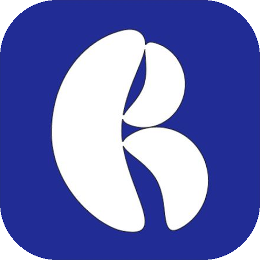
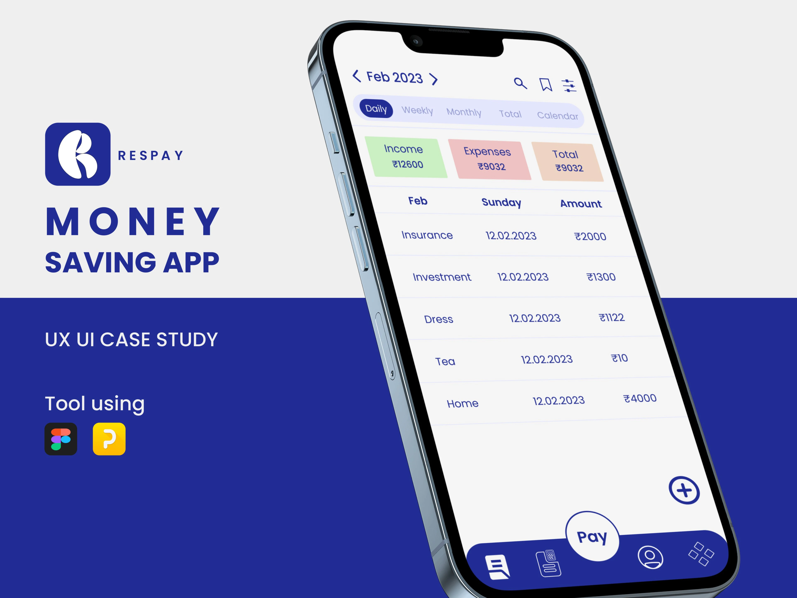
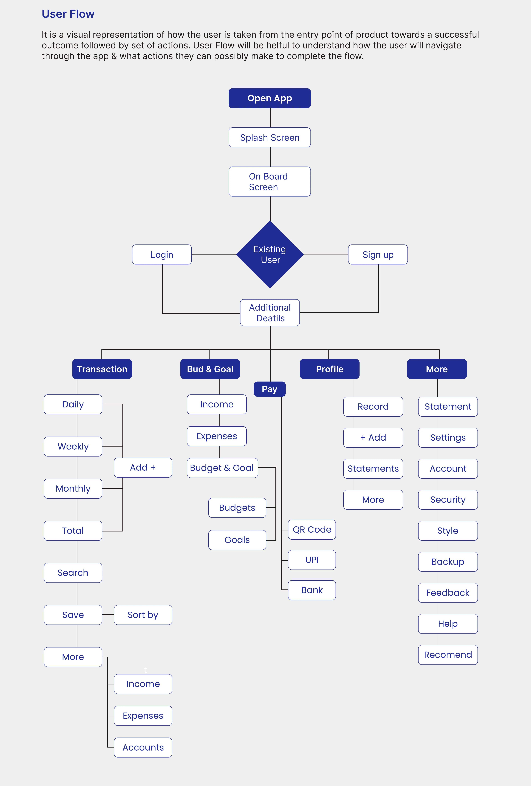
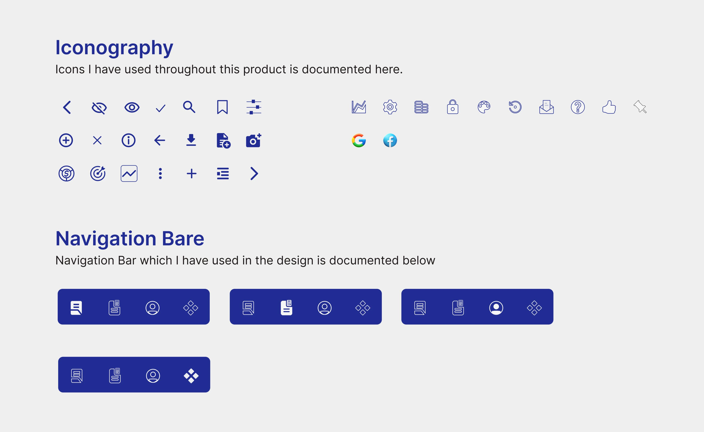
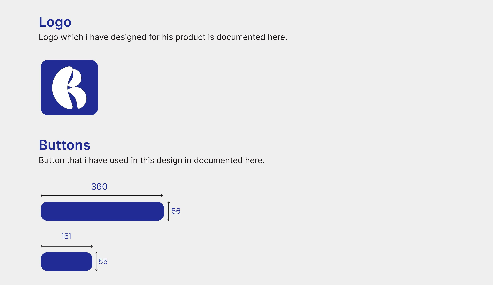
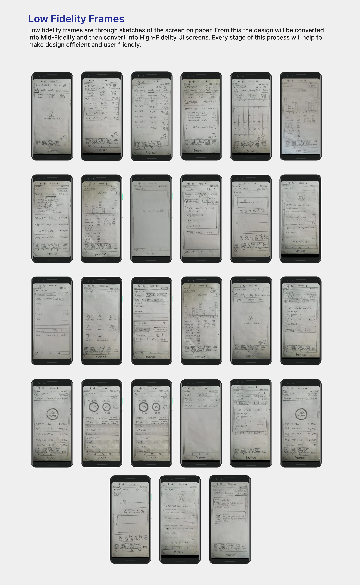
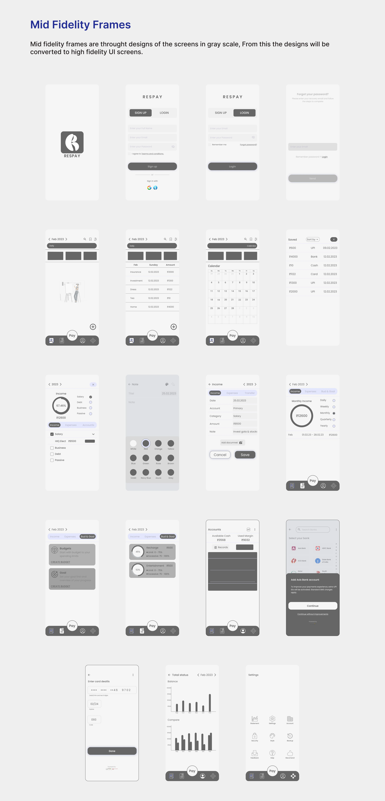
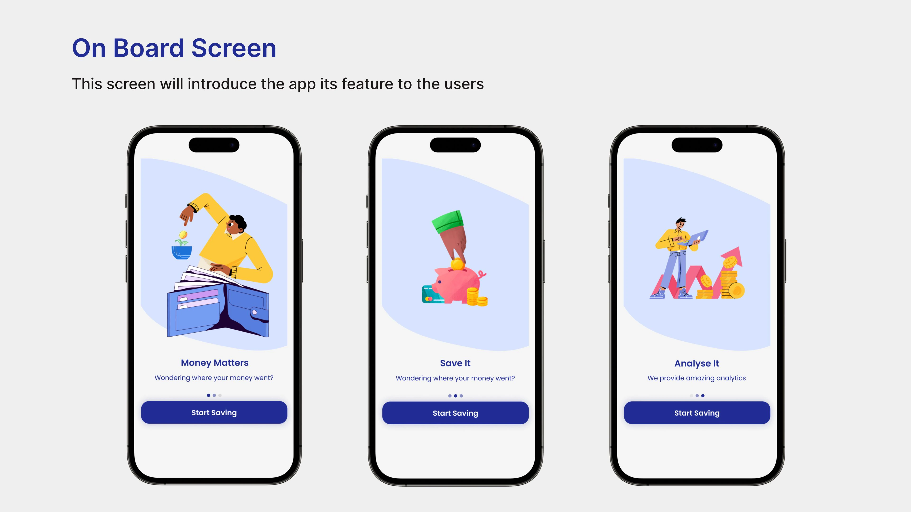
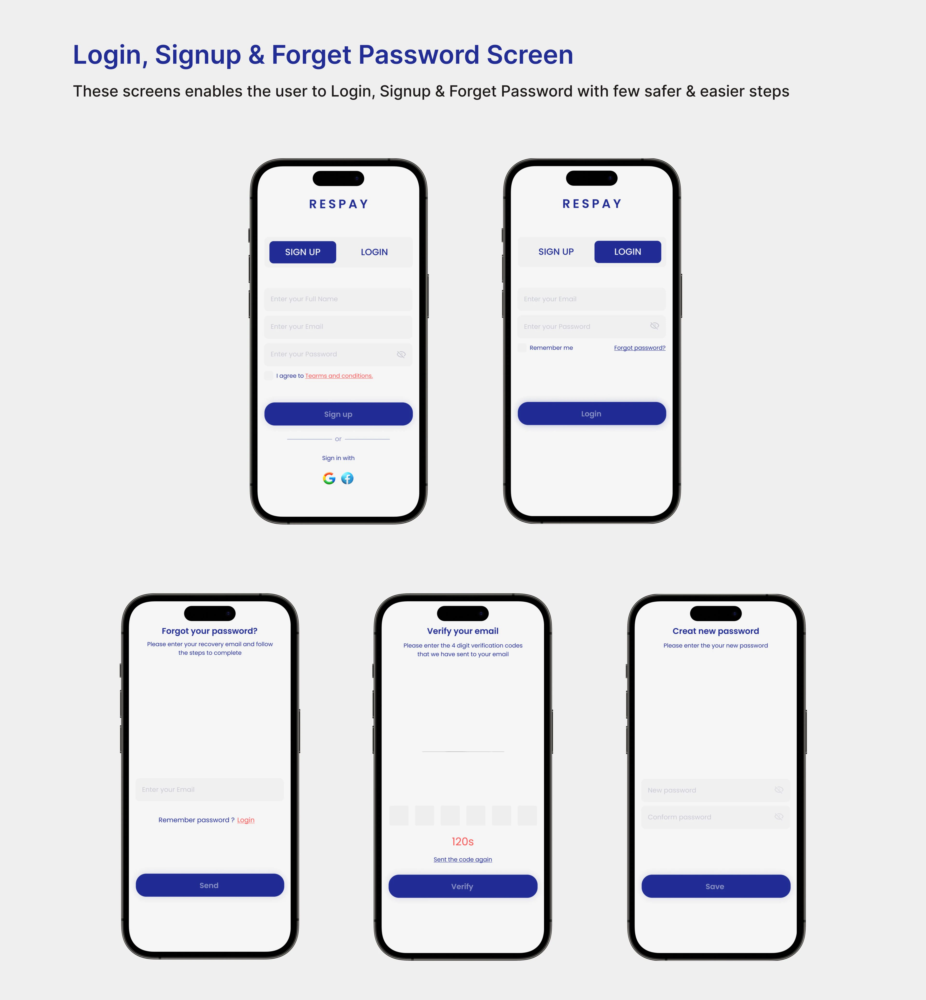
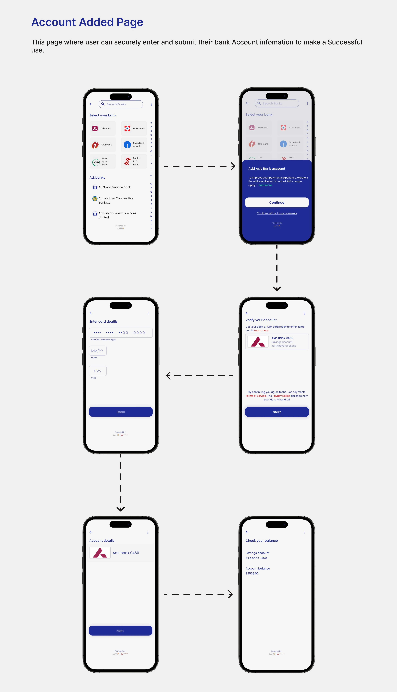

RESPAY
Money saving app
Finance · UX/UI case studyOutcome 90+ screens and a prototype in 14 weeks, from research to high-fidelity UI.
- Duration
- 14 weeks
- Screens
- 90+ designed
- Role
- UX + UI research & design
- Platform
- Mobile app
- Tools
- Figma + Prott
- Year
- 2023 on Behance
A money saving app that spots unwanted spending, for young earners and families.

Saving is hard when you can't see where the money goes
The app makes it easy for youngsters and families to save their money. It identifies unwanted spending and points it out to the user.
It's useful for people who struggle with saving money, investment and life insurance, and the interface is easy to use.
Problem statement
Some young people don't save money and don't know how to save it. Many people spend money unnecessarily.
Solution
Identify unnecessary expenses and make people aware of them, with savings, investment and insurance planned from the salary, so they can buy what they need without borrowing.
14 weeks of design thinking
A user-centred, non-linear and iterative process in five phases.
Empathise
User-centric research to understand behaviour and needs.
Define
The problem statement, defined in a human-centred way.
Ideate
Innovative solutions to the problem statement.
Prototype
The best solution for each problem from the first three stages.
Test
Testing solutions to understand the product and its users deeply.
Listening first
Understanding behaviour, needs and motivations through observation, task analysis, Google and the Play Store, then collecting reviews and feedback on the closest competitors.
- What would happen to your finances if you were out of work for 6 months?
- How much of each paycheck should you aim to put away in savings?
- How much of your income should you be saving for retirement?
- Do you calculate your daily expenses?
- Have you made a retirement savings plan?
- How do you deal with spending sprees during the festive season?
- Age: 20–25
- Living in Dubai & Chennai
- Occupation: junior engineers and full stack developers
- Tech knowledge: app users
- Gender: male
- I ran interviews and built empathy maps to design for users' needs, goals and frustrations.
- Two perspectives emerged: what saving even is, and how to save every month on a small salary.
I'm trying to save my money, but I can't do it.
User pain pointI pay 50% of my salary to EMIs, so I can't save money.
User pain pointI can only buy a product through EMI. I have no patience for saving.
User pain pointWizely, Monefy, Wallet & Mvelopes
Strengths and weaknesses of direct and indirect competitors, and the pain points users mentioned in their reviews.
| Features | Wizely | Monefy | Wallet | Mvelopes |
|---|
Meet Vishnu
Built from the research and interview answers, to keep the target users' needs, behaviour and goals in view.
Vishnu
23 / Male
Working in Dubai
Motivation
- Awareness
- Time saving
- Good money management
Goals
- Cut unwanted spending
- Save into a retirement plan
- Save 25% of his salary
Frustrations
- No money saved so far
- The cost of festival time
- High bike maintenance cost
Character
Technology
- Internet on mobile and laptop
- Uses social media
- Banking operations
Brands
- Flipkart, Amazon
- Instagram, Facebook
- Uber, Ola
- Swiggy
- GPay
What he says, does, thinks and feels
Says
- Keeps money aside for emergencies
- Tells his friends how important money is
- Has invested in gold coins and gold jewellery
Does
- Has a good habit of festive savings
- Decided never to take a loan
- No one has helped him save yet
Thinks
- Cut unwanted spending
- Save money for retirement
- Save a set part of the salary
- Set a goal first, then cut unwanted expenses
Feels
- The upcoming festival cost is already saved in the bank
- Unhappy that he isn't saving
- Most of the money goes on food and internet packs
23
A day of money decisions
The pain points, challenges and mindset across a typical journey, and how the user feels at each stage.
Two designers, one need at a time
In an ideation workshop I wrote user stories from the users' goals and frustrations, then worked through solutions with a fellow designer. Writing stories from the end user's view keeps the product user-centred.
Five areas, everything findable
Organising, structuring and labelling the features so users can find them and finish tasks quickly.

Poppins, navy and a colour per category
Typography · Poppins
abcdefghijklm
ABCDEFGHIJKLM
Colours


Paper first, then grey frames


The app, screen by screen


